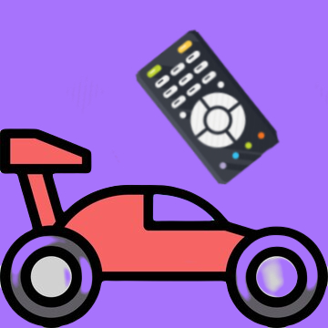
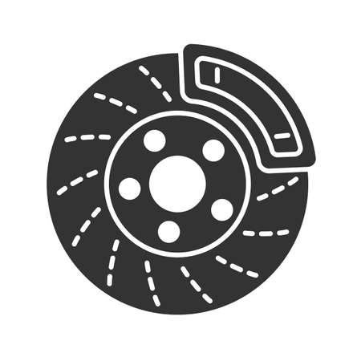

MY PROJECTS
Many of the projects I’ve built, while somewhat useless, pertain to engineering. Hence, the inherent different learning curves for each project in itself presented the opportunity to sharpen my technical knowledge and soft skills of self-directed teaching.

Glowscript IDE - Physics Simulations
Amalgamation of programming (Visual Python) and physics to create 3-D simulations of many Newtonian classical concepts.

IR Remote Control Car
Remote controlled vehicle using Arduino circuitry to receive and compute IR transmissions.

Bicycle Tachometer & Odometer
Utilization of Arduino circuitry and Hall effect sensors to measure, compute and display instantaneous cycling speed and cumulative distance travelled.

Bicycle Brake Lights
Electronically responsive bicycle brake lights by using Hall effect sensors as magnetic switches.